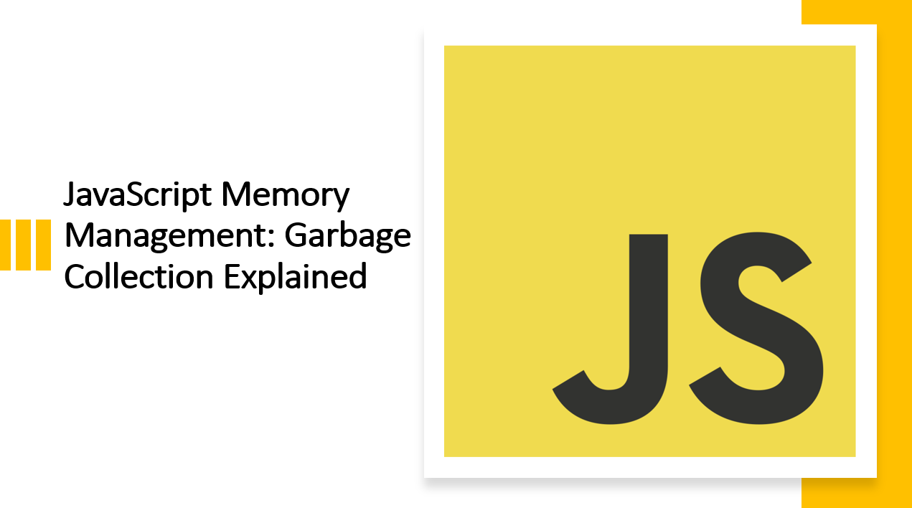

Introduction
Memory management is a critical aspect of any programming language, including JavaScript.
To ensure efficient memory usage and prevent memory leaks, JavaScript employs a process called "garbage collection."
In this blog article, we'll dive into the concept of garbage collection, explore how it works in JavaScript, and learn how to optimize memory usage in your code.
1. What is Garbage Collection?
Garbage collection is a process that automatically reclaims memory occupied by objects that are no longer in use. It is a form of automatic memory management that frees up memory for new objects.
Garbage collection is a critical process in any programming language. Without it, memory leaks can occur, which can lead to performance issues and even application crashes.
Suggested Tutorials 📑:
2. How Does Garbage Collection Work in JavaScript?
JavaScript is a garbage-collected language. This means that it automatically allocates and deallocates memory for objects.
JavaScript uses a mark-and-sweep algorithm to perform garbage collection. This algorithm works by marking objects that are still in use and sweeping away objects that are no longer in use.
The mark-and-sweep algorithm works in two phases: the mark phase and the sweep phase.
2.1 The Mark Phase
The mark phase is the first phase of the mark-and-sweep algorithm. It works by marking objects that are still in use.
The mark phase starts by marking all objects in the root scope as "in use." The root scope is the global scope in the case of JavaScript. It is the scope that contains all other scopes.
After marking all objects in the root scope as "in use," the mark phase then proceeds to mark all objects referenced by the root scope as "in use." It then marks all objects referenced by the objects referenced by the root scope as "in use." This process continues until all objects that are still in use have been marked.
2.2 The Sweep Phase
The sweep phase is the second phase of the mark-and-sweep algorithm. It works by sweeping away objects that are no longer in use.
The sweep phase starts by sweeping away all objects that are not marked as "in use." It then proceeds to reclaim the memory occupied by the swept objects.
2.3 Example
Let's look at an example of garbage collection in JavaScript.
const obj = {
name: "John",
age: 30,
};
const objRef = obj;
objRef = null;
In the code above:
- We create an object called
obj. - We then create a reference to the object called
objRef. - Finally, we delete the reference by setting it to
null.
When we delete the reference, the object is no longer in use. This means that it can be garbage collected.
Suggested Tutorials 📑:
3. How to Optimize Memory Usage in JavaScript
JavaScript is a garbage-collected language. This means that it automatically allocates and deallocates memory for objects.
However, this does not mean that you can't optimize memory usage in JavaScript. There are several ways to optimize memory usage in JavaScript.
3.1 Use the delete Operator
The delete operator is used to delete properties from objects. It can also be used to delete variables.
The delete operator is useful for optimizing memory usage in JavaScript because it allows you to delete objects that are no longer in use.
Example
const obj = {
name: "John",
age: 30,
};
delete obj;
In the code above:
- We create an object called
obj. - We then delete the object using the
delete operator.
3.2 Use the undefined Value
The undefined value is used to represent a variable that has not been assigned a value. It is also used to represent a property that has not been assigned a value.
The undefined value is useful for optimizing memory usage in JavaScript because it allows you to free up memory by setting variables and properties to undefined.
Example
const obj = {
name: "John",
age: 30,
};
obj = undefined;
In the code above:
- We create an object called
obj. - We then set the object to
undefined.
3.3 Use the null Value
The null value is used to represent a variable that has been assigned a value of null. It is also used to represent a property that has been assigned a value of null.
The null value is useful for optimizing memory usage in JavaScript because it allows you to free up memory by setting variables and properties to null.
Example
const obj = {
name: "John",
age: 30,
};
obj = null;
In the code above:
- We create an object called
obj. - We then set the object to
null.
Suggested Tutorials 📑:
3.4 Use the void Operator
The void operator is used to evaluate an expression without returning a value. It is useful for optimizing memory usage in JavaScript because it allows you to free up memory by evaluating expressions without returning a value.
Example
const obj = {
name: "John",
age: 30,
};
void obj;
In the code above
- We create an object called
obj. - We then evaluate an expression without returning a value using the
void operator.
3.5 Use the with Statement
The with statement is used to create a new scope. It is useful for optimizing memory usage in JavaScript because it allows you to create a new scope without creating a new function.
Example
const obj = {
name: "John",
age: 30,
};
with (obj) {
console.log(name);
console.log(age);
}
In the code above:
- We create an object called
obj. - We then create a new scope using the
with statement.
3.6 Use the eval Function
The eval function is used to evaluate a string as JavaScript code. It is useful for optimizing memory usage in JavaScript because it allows you to evaluate strings as JavaScript code without creating a new function.
Example
const obj = {
name: "John",
age: 30,
};
eval("console.log(obj.name);");
eval("console.log(obj.age);");
In the code above:
- We create an object called
obj. - We then evaluate a string as JavaScript code using the
eval function.
Suggested Tutorials 📑:
3.7 Use the Function Constructor
The Function constructor is used to create a new function. It is useful for optimizing memory usage in JavaScript because it allows you to create a new function without using the function keyword.
Example
const obj = {
name: "John",
age: 30,
};
const func = new Function("obj", "console.log(obj.name);");
In the code above:
- We create an object called
obj. We then create a new function using the Function constructor.
These are some of the ways to optimize memory usage in JavaScript.
Suggested Tutorials 📑:
Conclusion
Understanding JavaScript's garbage collection is essential for writing efficient and robust code. By letting the garbage collector manage memory automatically, you can focus on developing features without worrying about memory leaks. However, it's crucial to be aware of potential pitfalls and follow memory optimization practices.
We hope you found this article helpful.
Happy coding! 😇